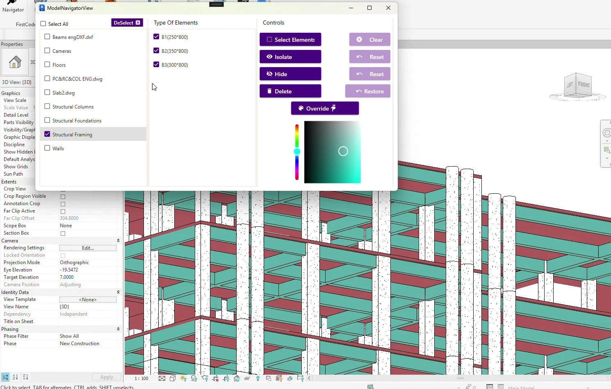

Available in all four packages · Revit Add-in
Model Navigator
Find, filter, and select. Visualize and act in Revit.
Work with model elements from one panel. Narrow your scope by category, type, or parameters, then isolate, hide, apply transparency, or color-code the result.
Work on exactly the part of the model you need
Use Current Selection to define a working scope directly from Revit. Model Navigator shows only the categories, types, counts, and filter results within that selection.
Flexible Scope
Work in Active View, Entire Model, or a custom Current Selection scope.
Category & Type Navigation
Browse model categories and instantly see the available Revit types and element counts.
Advanced Parameter Filtering
Narrow elements using Revit parameter values with smart cascading filters.
Pick Directly from the Model
Pick categories or exact elements directly from Revit instead of searching manually.
Select by Element ID
Paste multiple Revit Element IDs and locate the corresponding elements quickly.
Saved Selections
Save and reload Filter, Pick Element, and ID-based selections for later use.
Visibility & Graphics Controls
Isolate, hide, reveal hidden elements, apply transparency, and color overrides.
Bulk Model Actions
Select or delete large groups of matching elements and restore the last deleted group directly from Model Navigator.
See Model Navigator in Revit
Follow the on-screen steps from setup to the modeled result.
Manual Revit vs. Model Navigator
| Task | Manual Revit workflow | With Model Navigator |
|---|---|---|
| Find elements within a working scope | Build a selection through views, properties, or manual picking. | Choose Active View, Entire Model, or Current Selection, then filter by category, type, or parameters. |
| Find multiple element IDs | Search for the IDs and assemble the result manually. | Paste multiple Revit Element IDs and select the matching elements. |
| Visualize and reuse the result | Apply visibility and graphic overrides, then rebuild the selection when needed. | Isolate, hide, reveal, or apply graphics, and save the selection for later. |
| Act on a matching group | Find and select the elements again before editing the group. | Select or delete the matching group, with an option to restore the last deleted group. |
Finding and isolating elements for a coordination review
The scenario uses a known category and parameter value. The repeated-review example assumes the model is ready and the first selection still applies. These are planning estimates. Actual times depend on the model and setup.

One coordination selection
Manual in Revit
10–15 min
Find matching elements, select them, and isolate or color them for review.
Model Navigator
30–60 sec
Filter the scope, select the result, and apply visibility or color controls.
9–14.5 min estimated savings
Five repeat reviews
Manual in Revit
20–40 min
Recreate the selection and the review view at each pass.
Model Navigator
1.5–3 min
Save the first selection, then reload and review it on later passes.
17–38.5 min estimated savings
See how Model Navigator fits your workflow
Tell us what you’re modeling or reviewing in Revit. We can walk through the workflow and discuss compatibility, licensing, and support. Use Request Package to add the package to your request list.